How to generate video signals in software using PIC
| 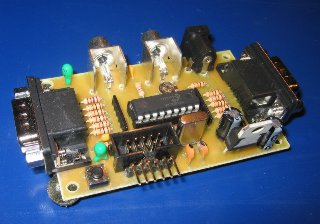 |
| My open source PIC-based video game system that this howto is based on. |
Background
During the Christmas holidays 1997-1998, I started on a small project,
trying to generate a video signal with a PIC16C84. I had seen some video
clock generating video signals in software, and thought it was a quite
interesting idea, and wanted to take it a step further. I didn't know much
about video signals back then, I basically just had seen how a single scan-line
works. But during the spring I learned more and succeeded in making the
game Pong with a PIC16C84. I thought this was quite cool,
so I made it available on the Internet, and during the summer I also made the game
Tetris. I had a lot of feedback about the games from people
telling me how cool it was, and from people who actually built the games. Based on
this feedback I
guess that probably 200-300 people have built my games, which is
much more than I expected. A lot of people ask me stuff about video signals and how
these games can generate a video signal in real-time in software, so that's why I'm
writing this small piece of text about how to generate video signals in real-time.
Hopefully this text will help you to understand video signals and how my games work.
Note: I've written a much better document also describing how to generate color, it is
based on my SX28 game system, SX28 is a "PIC-compatible microcontroller on steroids"
(or actually they've just made a true RISC processor with CPI=1 and clocked it very fast)
In this text I assume that you have some basic knowledge about
TV's and good knowledge in electronics and PIC programming,
but even if you know a
lot of electronics and PIC micro-controllers, you
would probably have to read it a
couple of times before you understand it completely. (If you don't understand this
text, then don't ask me about it because if you don't understand it when I explain
it in such detail as in this text, then it is impossible for me to make you understand
in a short email)
Video signals
To understand anything about generating video signals in real-time, one must know how video-signals work in detail, so before we look at any code we'll have to talk about video signals.
How a standard TV-set works.
A standard TV-set is built with a vacuum tube, which has a phosphor screen that
an electron canon shoots at. When the electrons from the cannon hits the screen,
light is emitted from the phosphor as long as the canon shoots electrons at it,
and it also has a short afterglow. The electron
beam from the electron-cannon can
be bent using magnets so it shoots at different parts of the screen. If this is
controlled so it draws horizontal lines all over the screen repeatedly, while the
intensity of the beam is
controlled, an image can be drawn on the screen. The
screen is redrawn 25 times per second on a PAL system, but to reduce flickering
the image is interlaced, showing first all odd lines then all even lines, so the
image is partially updated 50 times per second. Thanks to the
"persistance of vision effect"
of the human brain the image seems to be constant instead of flickering at 50Hz.
To get color each dot on the screen
is divided into three colors: red, green and blue, however here we'll only discuss
black and white television, because that is only what is possible to generate real-time
in software using a PIC.
| The electron beam drawing the screen | The two part images becomes one whole image. |
Different TV standards
There are three major TV-standards: NTSC, SECAM and PAL. The NTSC (Short
for "National Television System Committe", but back in the early days of
TV there was problems with getting the same color over the whole picture
so a more evil interpretation of the letters is that it stands for "Never
The Same Color" ) is the American TV-standard, it has only 525 scan-lines,
but it has a update frequency of 30Hz. SECAM (Short for "SÉquentiel Couleur Avec Mémoire" (French for "Sequential Color With Memory"), but as the French usually want to get their own solution to
problems, a more evil interpretation is that it stands for "System Essentially
Contrary to the American Method") is the French TV-standard, it has improved
color stability and higher intensity resolution but with less color resolution,
I don't know much about that standard. The European standard is PAL (Phase
Alternating Lines, or as a PAL enthusiast would interpret the letters:
"Perfect At Last"), it has 625 lines per frame, 25 frames per second. It
is based on NTSC, but the color-coding has been improved by using a phase
shift on every other line to remove the color errors that occurred with
NTSC. In this document I will focus on the PAL.
The information in the video signal
The image seen on the screen has different intensities. As the electron
beam sweeps over the screen, the intensity that should be at the position
of the beam, is sent as a voltage level in the video signal.. There is
no information in this intensity information about where the electron beam
is on the screen. To solve this, a synchronization pulse is sent in the
beginning of each line to tell the TV that the current line is finished
and move down the electron beam to the next line. (Like the <Enter>
key on the keyboard, when writing a text with a computer) The TV must also
know when a new image is coming, this is done by making a special synchronization
pattern. (Like the "new document" function when writing a text with a computer)
An image that is updated 25 times per second would be quite flickering,
so therefor all even lines are drawn first and then all odd, this method
shows 50 half images per second, making the picture have less flickering.
The information whether the image contains even or odd lines are sent in
the vertical synchronization pattern, as different patterns for odd and
even images. The video signal has a voltage range 0 to 1V, where 0.3V represents
black, and 1.0V is white (gray intensities have voltages between these
values). Levels close to zero represent synchronization pulses
| 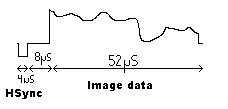 |
| "Oscilloscope"-picture of one scan-line |
The scan-line
The image is divided into scan-lines, it is the most important part
of the image since it contains the image data. The scan-lines are all 64us
long. First a 4us long sync pulse is sent, by setting the signal level
to 0V,
to tell the TV that a new line is coming. The old TV's was kind of slow, so
they needed 8us after the sync-pulse to get the electron beam in position.
During this time the signal is kept at black level. The 8us
delay is followed
by the image data for 52us, drawn on the screen from the left to the right with
the intensities obtained from the video signal.
Black is represented by 0.3V
and as the voltage increases the intensity
increases, with the maximum intensity
at 1.0v (white). See the image right to see the scan-line.
Putting the scan-lines together to an image
An image is built from 625scanlines, but a TV doesn't show 625 lines. Some of the
lines are used for synchronization pulses, and some lines are
invisible (I don't
know exactly how many) because old TVs needed some time to move the electron beam
from the bottom of the screen. (Those invisible
lines are nowadays used for other
purposes, Text-TV for example).
| 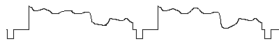 |
| "Oscilloscope"-picture of several scan-lines in a video signal. |
The vertical synchronization pulses.
To tell the TV that a new image is coming, a special pattern of synchronization
pulses is sent. Since the picture is built from two half pictures, the pattern
is different for the odd and even images. The vertical synchronization pulses
looks like this
| This picture shows the different vertical synchronization pulses for the two half images. The levels are 0v and 0.3v. Numbers below signals shows scan-line number. (Click to enlarge) |
{kind=link}
How to do it in software
Creating video signals in software Ok, this is the part about how to create the video signal in software, it will not be possible to understand if you don't understand the video signal stuff described above.
When you know how a video signal should look like, it is quite easy to generate it in software, if you have unlimited processing power. The problem is that it requires a lot of power from the processor, but if you don't have a powerful processor it can be done anyway, by thinking before writing the code.
In my code examples in this part I will use the two following macros:
DNOP - dual nop, a macro to wait for two clock cycles, instead of two nops
DELAY - a delay macro that delays 3 times the number of clocks in the W-register.
The hardware
To be able to generate a video signal, some hardware is needed to be able to
generate signal levels between 0 and 1V. To get a picture you'll
need at least 3 levels.
The TV needs sync and black level to be able to lock on the video signal. If you want
more than a black image you'll need some gray or white level. Some kind of digital to
analog converter is needed, with at least 2bits to get enough levels. The input impedance
of the composite
input on a standard TV is 75 Ohms, and by using two resistors a 2-bit DA
can be created (as in the images below) thanks to voltage division.
| 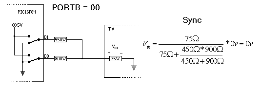 |
| By connecting both D0 and D1 to ground, the voltage at the input
of the TV will be 0v (sync level) because nothing is connected to VDD. |
| 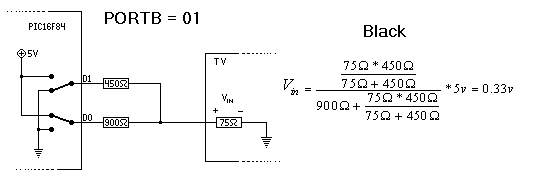 |
| Connecting D1 to ground and D0 to 5v, will put the 450ohm resistor
in parallel with the 75ohm input impedance of the TV, and with the 900ohm resistor
connected in series, and thanks to voltage division
this generates 0.33v at the
input of the TV, and that is quite black. (true black level is 0.3v) |
| 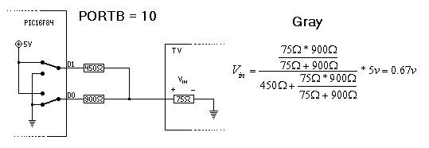 |
| Connecting D1 to ground and D0 to 5v, will put the 900ohm resistor
in parallel with the 75ohm input impedance of the TV, and with the 450ohm resistor
connected in series, and thanks to voltage division
this generates 0.67v at the input
of the TV, and that is gray. |
| 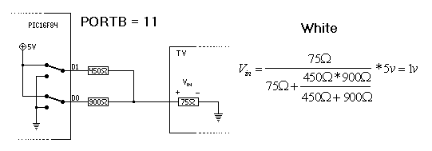 |
| Connecting both D1 and D0 to 5v, will put the 450ohm resistor in
parallel with the 900 ohm resistor, with the 75ohm input impedance of the TV connected
in series, and thanks to voltage division this generates
1.0 at the input of the TV,
and that is white level. |
With this circuit, four levels can be created. The image above shows the equivalent circuits for the four different levels and how the voltages are created. Resistor values are not critical, you could use the more standard values 470 and 1k instead of 450 and 900, it will still work anyway. (Little bit different intensities, but not much)
Ok, so now we can create sync, black, gray and white levels. That is enough to make
simple graphics like in my Pong and Tetris games. It is possible to create more levels
by using better DA converters with more levels, but if you want more bits in the DA you
should use a real DA instead of the resistor-based that I use in my games. (You'll also
need a faster processor)
Software vs. hardware generated video signals.
On a standard video system like the graphics card in a PC, information about what to draw
on the screen is taken from a memory. This is done automatically in hardware.
Synchronization pulses are also created automatically in hardware, all the software need
to do is to write to the memory to tell the hardware what the image on the screen should
look like. Not only does this require a lot of hardware, it also requires a lot of memory,
on a PC graphics card there is usually several megabytes of graphics memory. In a PIC16F84
there is 68byte memory, and that memory should also be used for other purposes like application
variables and such. It is not possible to store the whole image in
memory like on graphics
cards, the image has to be generated as the video signal sweeps across the screen.
Generating video signals in software on such a simple processor is kind of hard, only very
simple images can be created. The advantage is that it is quite cheap, and it is quite
cool too. =)
One scan-line, making a vertical bar.
The first test I made when I started experimenting with software generated video was to
make a white vertical bar on the screen. By creating one scan-line
with color information
gray-black-white-black-gray, and repeated the scan-line
forever, an image could be seen on
a TV. The signal contained the horizontal sync-pulse, followed by a delay and then the color
information, so the TV could lock to the signal horizontally. (Not vertically because, there
was no vertically sync-pulses). I think it looked something like this:
| 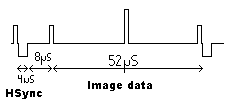 | 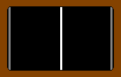 |
| The video signal generated by the code below would look like this on an oscilloscope. The low bumps are the gray bars, and the big bump in the middle is the white bar. | The video signal generated by the code below would look like this if input into a TV. Two gray bars and one white bar. (The brown border is supposed to be the TV) |
| main: | |
| movlw COLOR_SYNC | ;get sync level (1) |
| ;**** 4us sync **** | |
| movwf VIDEO_PORT | ;set port value(1) |
| movlw 3 | ;setup delaytime |
| DELAY | ;delay for 3us (9) |
| movlw COLOR_BLACK | ;get black level (1) |
| ; **** 8 us delay **** | |
| movwf VIDEO_PORT | ;set port value (1) |
| movlw 7 | ;setup delaytime (1) |
| DELAY | ;delay for 7us (21) |
| movlw COLOR_GRAY | ;get gray color (1) |
| ; **** 52 image data **** | |
| movwf VIDEO_PORT | ;set port value (1) |
| movlw 3 | ;setup delaytime (1) |
| DELAY | ;delay for 3us (9) |
| movlw COLOR_BLACK | ;get black level (1) |
| movwf VIDEO_PORT | ;set port value (1) |
| movlw 19 | ;setup delaytime (1) |
| DELAY | ;delay for 19us (57) |
| movlw COLOR_WHITE | ;get white level (1) |
| movwf VIDEO_PORT | ;set port value (1) |
| movlw 3 | ;setup delaytime (1) |
| DELAY | ;delay for 3us (9) |
| movlw COLOR_BLACK | ;get black level (1) |
| movwf VIDEO_PORT | ;set port value (1) |
| movlw 19 | ;setup delaytime (1) |
| DELAY | ;delay for 19us (57) |
| movlw COLOR_GRAY | ;get gray level (1) |
| movwf VIDEO_PORT | ;set port value (1) |
| movlw 2 | ;setup delaytime (1) |
| DELAY | ;delay for 2us (6) |
| DNOP | ;delay for 2 clocks (2) |
| goto main | ;loop forever jump (3) |
As you can see, the total number of clock cycles is 192 for each lap in the loop, making the scan-line 64us. The timing is very important, so this is what it is all about counting clock-cycles.
The problem with poor resolution
On a PIC16F84 @ 12Mhz, 3 million instructions per seconds are performed, during one
64us long scan-line 192 instructions can be performed, and during the 52us visible
part of the scan-line only 156 instructions can be performed. If the value of the
DA is set for each instruction during the 52us, you would get a resolution of 156
pixels in x-axis, that is really bad. What is even worse is that not all 156 pixels
can be used exactly as you want, you just can't calculate the value of one pixel in
one clock cycle unless it is always the same so it can be generated by a set bit
instruction.
Obtaining higher resolution by shifting out data
If you want to show 8 pixels black and white, stored in one byte in memory it would
look something like this:
| movlw 8 | ;number of pixels is 8 (1) |
| movwf counter | ;set counter to number of pixels (1) |
| shiftloop: | |
| movlw COLOR_BLACK | ;set default color to black (1) |
| rrf thedata,f | ;rotate the data right, puts bit in carry (1) |
| skpnc | ;check if carry, if not pixel remains black (1 or 2) |
| movlw COLOR_WITE | ;carry was set, set color to white (1) |
| movwf VIDEO_PORT | ;set color to DA (1) |
| decfsz counter | ;decrease counter, check for zero (1 or 2) |
| goto shiftloop | ;if more pixels, keep looping (2) |
The example above uses 8 clocks per bit. At this speed, we only get 19 pixels of x-resolution, and that is quite useless, but there is one nice solution to this problem. The solution is to use one port as a shift register shifting out one bit per clock, but as usual there is no free lunch, you'll have to sacrifice the possibility to use the port for whatever you want, and it only works for black and white (not gray levels). For example you can do like this:
Connect the MSB of the DA is to bit 0 at PORTB and the LSB is connected to some pin at PORTA. To use the PORTB as a shift register all pins have to be set to outputs. (So it is hard to use it for anything else). The LSB should be set high, and then one byte is placed in PORTB and is shifted out. Generating white and black levels according to the byte, for example like this:
| movfw thedata | ;set up the byte to be shifted out (1) |
| movwf PORTB,f | ;now the first bit becomes visible (1) |
| rrf PORTB,f | ;second bit is shifted out (1) |
| rrf PORTB,f | ;third bit is shifted out (1) |
| rrf PORTB,f | ;fourth bit is shifted out (1) |
| rrf PORTB,f | ;fifth bit is shifted out (1) |
| rrf PORTB,f | ;sixth bit is shifted out (1) |
| rrf PORTB,f | ;seventh bit is shifted out (1) |
| rrf PORTB,f | ;eighth bit is shifted out (1) |
| 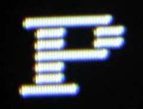 |
| The chars are only drawn on every second line as described above. |
The example above uses one clock per bit, giving a resolution of 156 pixels if there wouldn't be any setup time. In reality there is quite a lot of setup time, so just before and just after the 8 bits of graphics there will be wither white or black pixels during the setup.time. In my pong game the setup time can be seen when text is displayed on the screen, it is done using this method, so there are big black spaces between the characters on the screen. The strings are 8 charcters long, but I think it would be possible to get 10 characters on the screen, each 8 pixels wide, so each pixel uses about 1.5 clocks including setup. In pong, the bits to be shifted out are taken from a memory location containing the 8*8 bits = 8 byte, to be shifted out. For each line these 8 bytes has to be calculated by reading the string charcters from the data-eeprom where it is stored, and then get the correct bitmap from a constant lookup table in code memory, and store the bitmap data in memory. Doing all this for 8 characters takes a lot of time, so it is done during an entire scanline. The reason why the text is only displayed every second scan-line is that the processor is calculating the next line to show during the black lines in between the graphics scan-lines.
Ok, so this method makes it possible to show graphics with much higher resolution, but it occupies the entire PORTB during the shifting operation. At first it might seem impossible to use PORTB for other stuff, but it is possible. It can easily be used as an output if one pin of PORTA is used to disable the hardware attached to PORTB when it is used as a shift register. It is also possible to be used as input when not used for shifting. In my games I needed a lot of pins to connect the joystick, but connecting the joystick directly to the post is hazardous, because when used as an output the joystick could burn the output buffer of the port. (The joystick is a bunch of switches shorting pin to ground when pushed). I solved this by using 100k pull-up resistors, and 1k protecting resistors. This giving a voltage close to zero, when the joystick switch is short, when the joystick is read by the port, but protecting the port against shortcut to ground when used as output when port is used as a shift register.
The vertical synchronization.
To get the TV to lock on the video signal, the vertical pulses must
be generated.
It can be done by the following code:
| Shortsync: | ; label "Shortsync", entry for short sync generator |
| movwf counter1 | ;set counter1 to number of shortsyncs |
| shortsync_l0: | ;label "Shortsync_l0", short sync count loop entry |
| bcf porta,0 | set level to synclevel (bit 1) |
| bcf portb,0 | ;set level to synclevel (bit 0) |
| dnop | ; |
| movlw 0x1d | ; |
| movwf counter2 | ;set counter2 to "30us" |
| nop | ; |
| bsf PORTA,0 | ;set level to black |
| shortsync_l1 | ;label "Shortsync_l1", short sync delay loop |
| decfsz counter2 | ;do delay counting |
| goto shortsync_l1 | ;loop if not finished with delay |
| decfsz counter1 | ;count number of shortsyncs |
| goto shortsync_l0 | ;if more shortsyncs, keep looping |
| retlw 5 | ;return and set w to number of longsyncs (5 longsyncs) |
| vertsync: | ; |
| movlw 5 | ; |
| btfss videostuff,0 | ; |
| movlw 6 | ; |
| call shortsync | ; |
| incf videostuff | ; |
| longsync: | ; |
| movwf counter1 | ;set synccounter to number of longsyncs (1) |
| longsync: | ;label "longsync" |
| movlw 0x1d | ; (1) |
| movwf counter2 | ;set counter to 30us (1) |
| bcf porta,0 | ;set level to sync bit 1 (1) |
| bcf portb,0 | ;set level to sync bit 0 (1) |
| longsync_l1 | ;label "longsync_l1", long sync delay loop |
| decfsz counter2 | ;do delay counting (1) |
| goto longsync_l1 | ;loop if not finished with delay (3) |
| nop | ;(1) |
| bsf porta,0 | ;set level to black (1) |
| nop | ;(1) |
| decfsz counter1 | ;count number of shortsyncs (1 or 2) |
| goto longsync_l0 | ;if more shortsyncs, keep looping (3) |
| movlw 5 | ;set number of shortsyncs to 5 (1) |
| btfss videostuff,0 | ;check if second field (1 or 2) |
| movlw 4 | ;yes, do 4 shortsyncs instead (1) |
| goto shortsync | ;do those short syncs |
My games
My Pong game in action.
My Pong game.
The code in the pong-game is kind of messy, it was the first video
thing I wrote, so I learned more as I wrote it, so therefor it could probably be done more
efficient if it was rewritten. The game logic is mostly a lot of if-statements to keep the
ball inside the screen. The first lines are just white, and it is on the upper lines that
the game logic is performed. For all lines on the real game-field there are two kinds of
lines, the ones with a ball and the ones without a ball. The without a ball first shows
the left player if needed, then the line is black until the right player should be shown
(or not). Lines with a ball on are similar, with the difference that a ball should be
shown at the black area. Having two computed delays before and after the ball is shown
does this, where the delays are depending of the x-position of the ball. Since the delay
is quantified to 3-clock chunks, the ball moves in quite big steps in x-axis.
At the bottom of the screen, the score is shown. Shifting out the score with the method described earlier does this. On most lines the sound routine checks if the sound is active, if so it toggles the audio output.
All text-menus have their text stored in the data-eeprom in 8-char long strings. These are shown with the shifting out method, The text is only shown on each every second line because on one line the text is extracted from data eeprom and the bitmap data is stored in a buffer area. On the second line it is shifted out.
My Tetris game in action.
My Tetris game.
The Tetris game logic was first made with Borland C in DOS on a PC,
just to get the logic correct before it was made for PIC assembler. The blocks are stored
in memory in a compressed format, and then decompressed according to the
current angle to
a buffer area where it is stored as relative coordinates. Three different routines can use
the block in the buffer area to operate on the screen buffer: Set, Clear and Test. The set
and clear are of course
routines that can add or remove the block to/from a specified
position on the screen, and the test routine check if a block can be placed on a certain
position. This approach makes the game quite structured, and easier to follow than pong.
The output routine is quite similar to the one shifting out characters to the screen,
except for that this one doesn't have to be that fast and it puts black pixels between the
blocks, so it just shifts out the game-field to the screen, quite easy actually.
On most lines a music routine is called that plays a tune by switching the audio channel on and off with different frequencies, this is done on all lines except the first ones where the game logic is taken care of. Due to that the music isn't played on all lines it will be quite distorted. The music is in a compressed format in the data-eeprom, with a tone and a length stored in one byte, with tones as indexes in a frequency delay lookup table. All frequencies has to be a multiple of the frequency of the scan-lines, so the frequencies are not exactly correct, and this makes the music sound even worse. Even though the music sound like shit I think it is quite nice that I could get music to the game. =)
The score is shown with the shift-out method, nothing special about it. There are no menus in Tetris because there was no room left for that.
Overlay and color
Overlaying video onto an existing signal
A lot of people have asked me about how to overlay a video signal to another, so I'll
briefly discuss the subject. It is quite hard to add two video signals, it require a lot
of hardware, but it a lot more easily to overlay graphics on a video signal if you generate
the graphics yourself. Instead of generating the sync-pulses, they are extracted from the
video signal and lock the timing in your code with the inputted sync pulses.
The LM1881 sync separation chip can extract the horizontal and the vertical sync pulses from a video signal, which makes things really easy. If we would like to add a small bitmap in the lower right corner of the current video image, then we wait for the vertical sync pulse, and after that we just could the horizontal sync-pulses until we are at the line where the image should be added. Lets say the image to be added is 8x8 pixels, then we should add our image to the following 8 lines, but only at the end. The image is added by switching away the original signal and sending our own video information. The switching should be done in the end of each line, so on each line we need to wait for 40-50us depending of the x-position of the added image. When we have done this for all the lines in the bitmap, we go back and wait for the vertical sync pulse, and do it all again. It becomes more complicatedwhen there is more information to be added, especially with a PIC due to the memory limitations.
I plan to do a project on this subject, but have not had time to do so yet.
Generating a color video signal
The color coding in composite video signals is quite
hard to understand if you don't
have some basic knowledge in radio electronics. I will just touch the subject briefly
here as it impossible to do useful color signals with PIC in software.
When color television was introduced, compatibility with the old black and white TV's was needed, because there were still a lot of B/W TV's around. If color TV signals were input in a B&W TV it should be possible to watch with no difference to B/W video signals. To do so, a amplitude modulated color carrier signal was added to the video signal, with a carrier at the frequency 4.43 MHz (PAL). The color carrier actually added some noise to the image, but it was not much, but in B/W televisions created after color was introduced, a color trap was added to remove the color carrier.
Combining the color Red, Green and Blue can generate most of the colors we can see. So the video signal must contain the three colors component's intensities, and that's a lot more info than in a B/W signal. The sum of all components is actually already being sent as the B/W intensity information, so by also sending the color differences R-G and B-G, all three colors could be extracted. But sending two color components on one carrier, is that possible? Yes, it can be done if two versions of the carrier is generated, if the phase is changed 90degrees. The R-G is sent with the original carrier, and the B-G is sent with the phase changed. Simplified the video signal is calculated like this:
signal_level = (R+G+B) + (R-G)*sin(w*t) + (B-G)*cos(w*t)
| 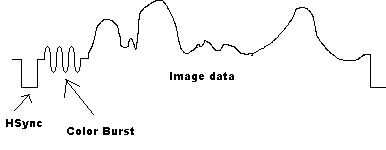 |
| "Oscilloscope"-picture of one scan-line in a color video signal. First there is the 4us sync pulse, in the 8us delay time there is a color burst sent, then the 52us of image data is sent. |
To be able to separate the two color components, the TV needs an oscillator that runs synchronous with the oscillator in the signal generator. Adding the color burst to the video signal has made it possible to synchronize the oscillator. In the 8us delay when the electron beam is moving to the next line, nothing is sent in a B/W video signal. However, in a color signal, about 10 clock cycles of the color carrier is sent, called the color burst, so the oscillator in the TV is synchronized with the one in the signal generator. If this wouldn't be done it wouldn't be possible to get correct colors. In the early ages of color television, the color burst was not always enough, the oscillator was not stable, so the phase changed over the screen, making people green in the face. This was a problem with the NTSC standard (That's why some people joke about NTSC meaning "Never the Same Color"), so when the PAL standard was created, they added a phase shift of 180 degrees every line, so that phase errors would take out each other.
This is kinda complex to generate in realtime in software, but fortunately if we have som knowledge about the TV input bandwith and rgb-relations we could simplify this to a single square wave with help from some mathematics, still it would require quite a lot of processorpower so it is quite useless when using a PIC, it is intersting using a faster chip like the SX-chips from Ubicom. I have made versions of pong and tetris generating a color composite video signal in software using SX chips, so if you want to know more about color generation have a look at those projects and read my document on how color generation with SX works.
Emulators.
If you plan to try generating videosignals with PIC-chips you should try to use an
emulator, makes it much easier. There are poeople that have developed emulators for PIC
processors and have implemented plugins for emulating my hardware:
More info about video signals.
If you want to know more about video signals and about generating video signals in software using PIC's, check out some of these links:
Questions ?
If you have questions about the games, make sure to check out the FAQ (Frequently Asked Questions) before you ask me.
Copyright note
Text on how to generate video signals (C) Rickard Gunee. This is open source, use this at your own risk ! You may use the information on this page for your own projects as long as you refer to the original author (by name and link to authors homepage), don't do it for profit and don't hurt or harm anyone or anything with it. The author can not be held responsible for any damage caused by the information on this and related pages.